Structures Team
Track Design
Designed a bolted structural steel support frame for the Hyperloop track, with columns, cross-members and gusseted corner plates anchored to a base-plate foundation.
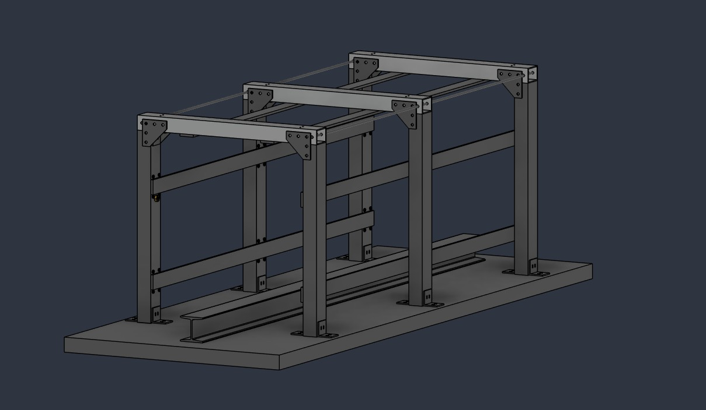
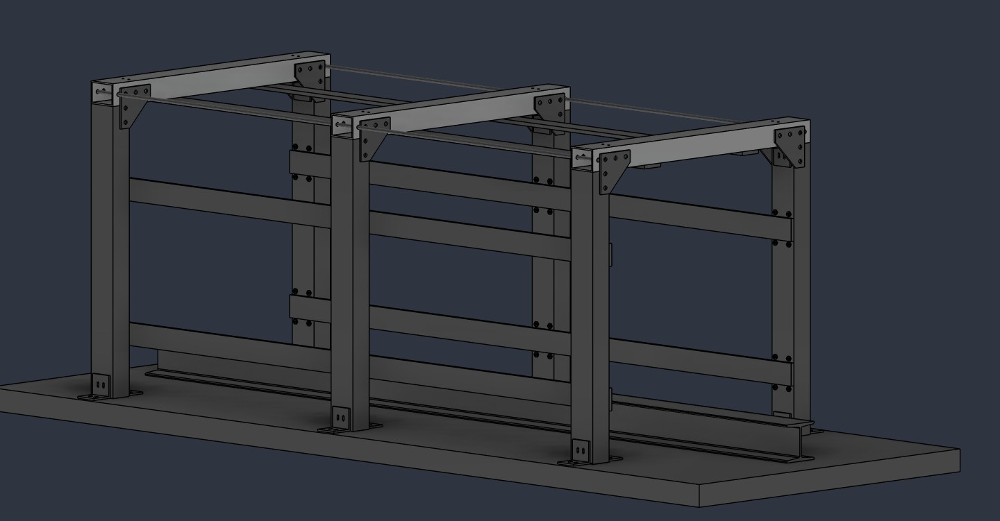
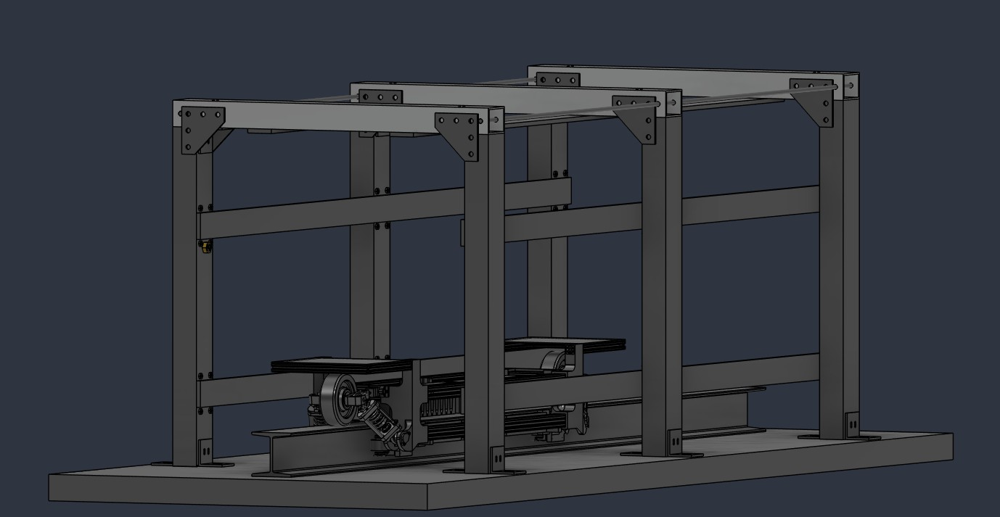
Ran static FEA to verify stress, deflection and factor of safety under load, validating the structure and de-risking the build before committing to material purchase.
Fusion 360
Pod Chassis, GNC Tray & Aeroshell
A 1.5 in T-slot space frame held together by 3D-printed nodes, carrying a slide-out GNC tray in the upper compartment and riding a W5 I-beam track. Every printed part fits a Bambu Lab X1C bed and assembles with hand tools.
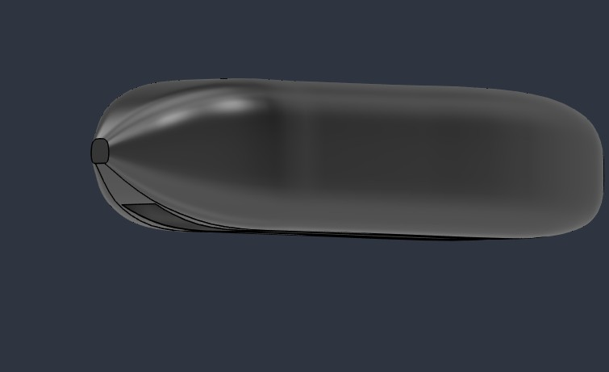
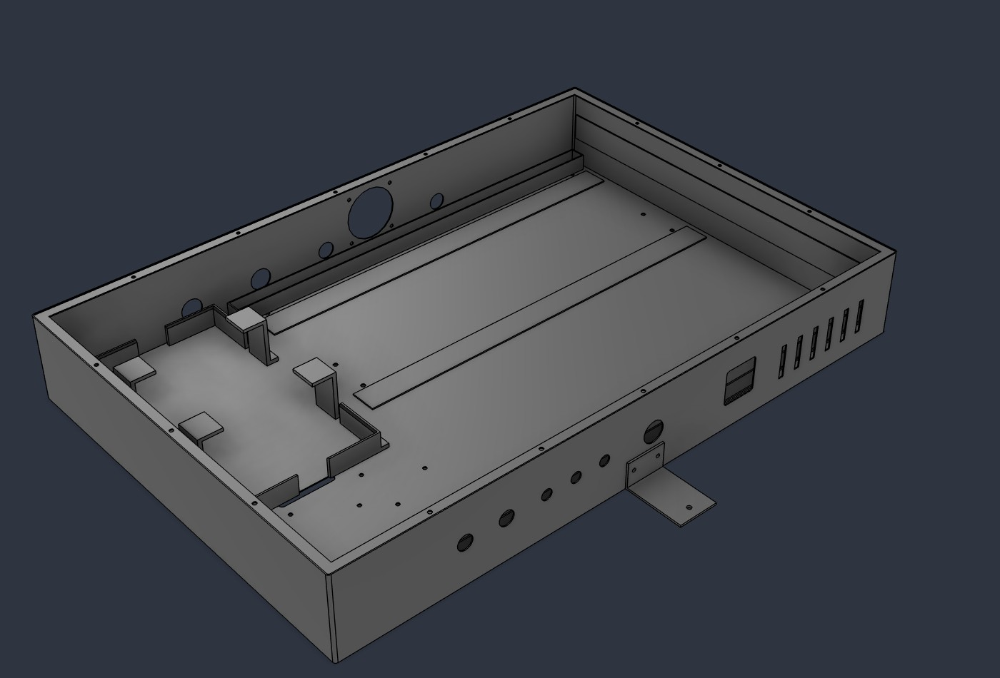
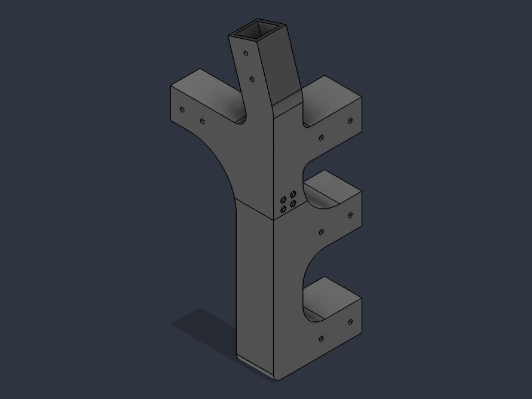
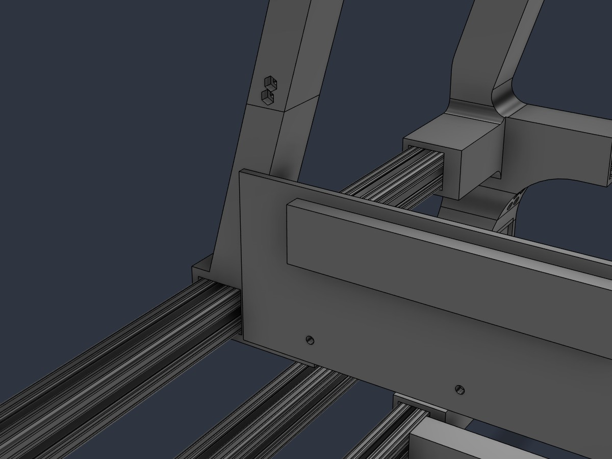
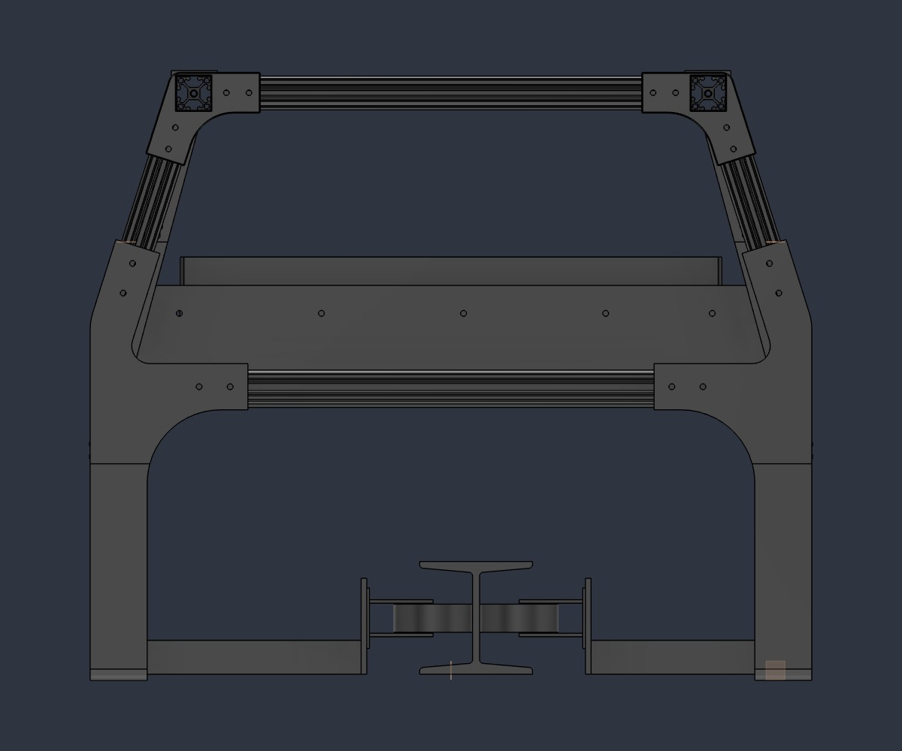
Corner bracket: the original chassis used a bracket, gussets, angle brackets and bolt-on plates at every node. Version 4 replaces all of it with one printed part per corner, split in two for the printer bed and joined by a 30 mm tongue at 0.2 mm clearance with four M5 bolts and captive nylock nuts. ¼-20 bolts into T-nuts lock the rails; the printed part only locates them.
Tray mid braces: four printed braces, two per side, stiffen the 6 ft side rails and double as the tray mount. An arm on each brace holds a T-slot cross member, so the tray needs no separate brackets.
Lateral VDC: four off-the-shelf Colson rigid casters on short T-slot arms, mounted on their sides so the wheels roll on the I-beam web and keep the pod centred on the track.
GNC tray: last year's machined plate on a T-slot frame was redesigned as a folded 5052 aluminum enclosure cut from DXF (609.6 × 914.4 × 127 mm, about 15 lb empty). It holds the battery pack, BMS and inverter, cools by cross-flow, and slides out the side of the pod on drawer slides with a ball-lock pin, interference-checked open and closed.
Research & Development
R&D Specialist
Conducted comprehensive feasibility studies for implementing Hyperloop infrastructure within Canada, analyzing geographic, economic and regulatory factors.
I also actively researched vacuum-pump technology to optimize the depressurization systems required for the low-pressure Hyperloop tube environment.
CAD Design & Aerodynamics
Conceptual Pod Design
A conceptual CAD design of a Hyperloop passenger pod, heavily inspired by the aerodynamic efficiency of the Japanese Shinkansen (bullet train). The nose-cone profile was meticulously modeled in SolidWorks to minimize aerodynamic drag at near-supersonic speeds within the low-pressure tube.
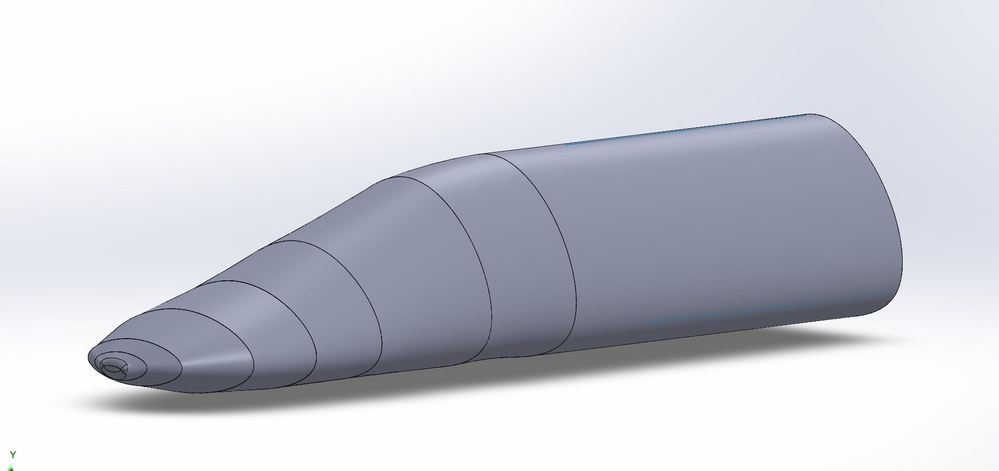
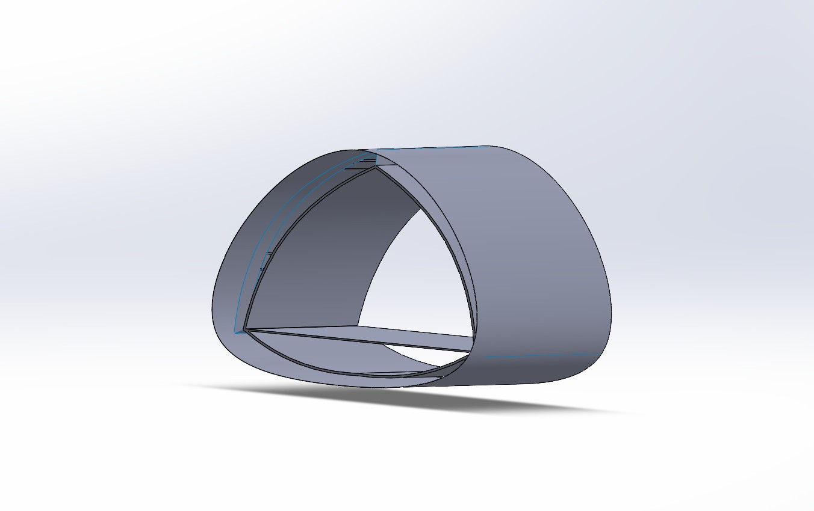
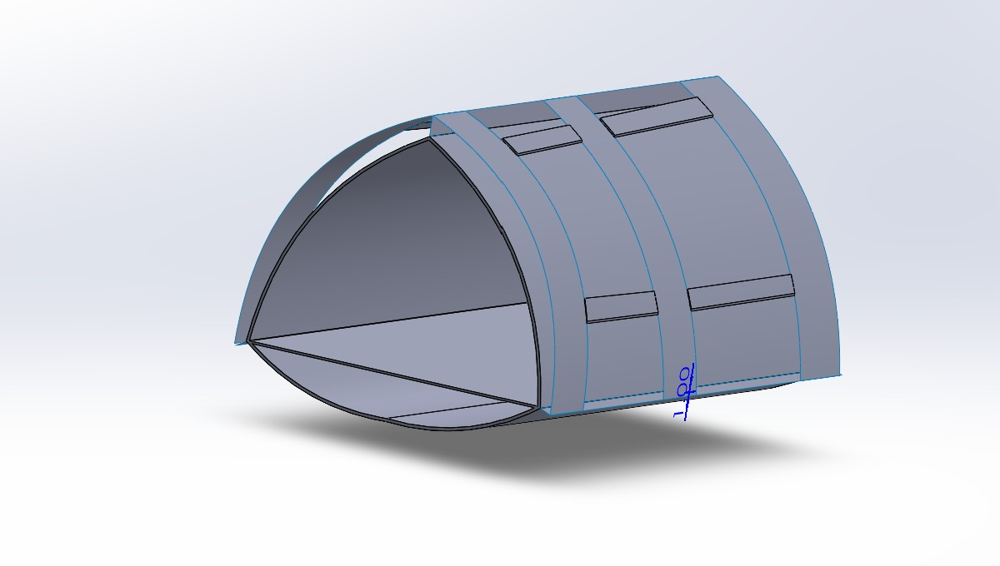
The current iteration focuses on the external aerodynamic shell and the structural ribbing required to withstand the pressure differential, with detailed work on the interior passenger cabin underway.
Ergonomics & Passenger Comfort
Interior Cabin & Seating
A custom high-speed transit seat inspired by luxury automotive and aerospace standards, prioritizing both ergonomics and space efficiency within the cylindrical hull constraints.
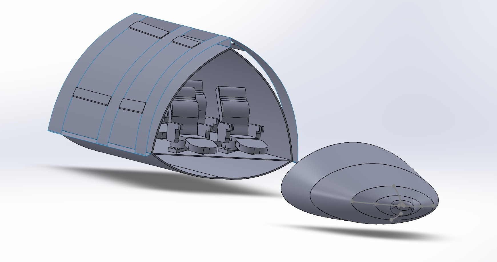
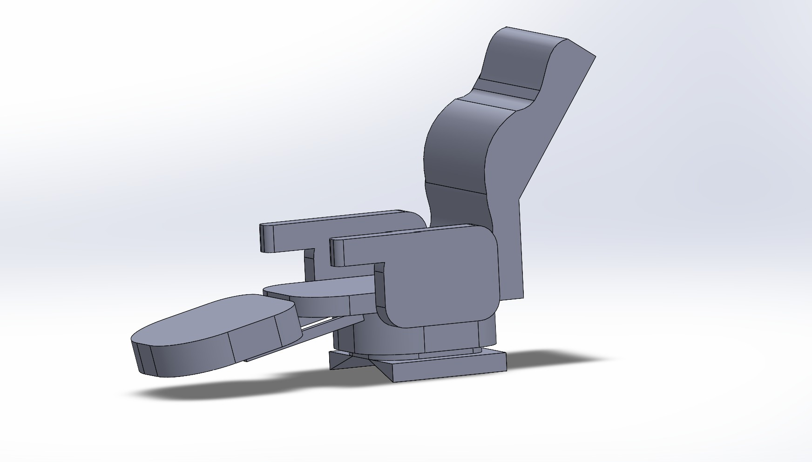
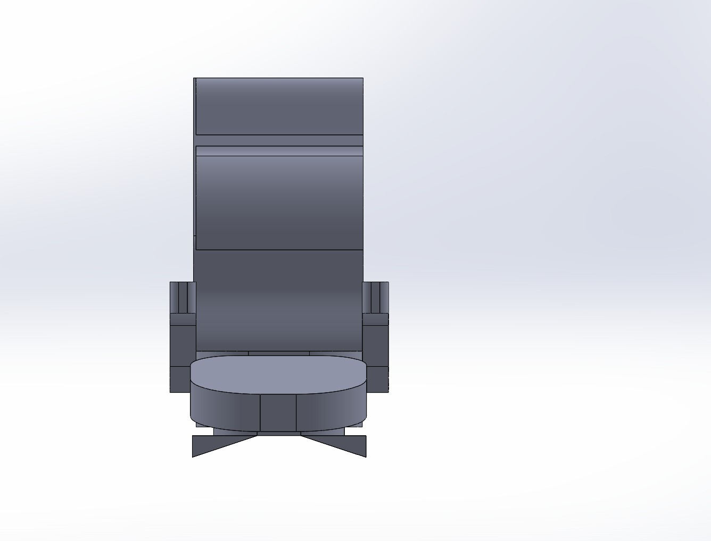
The design features a contoured profile for long-duration comfort, integrated armrests and a deployable leg-support system. The assembly model demonstrates the fitment of these seats within the pod's fuselage, accounting for aisle clearance and structural mounting points.